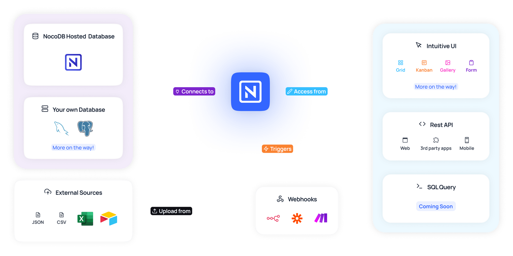
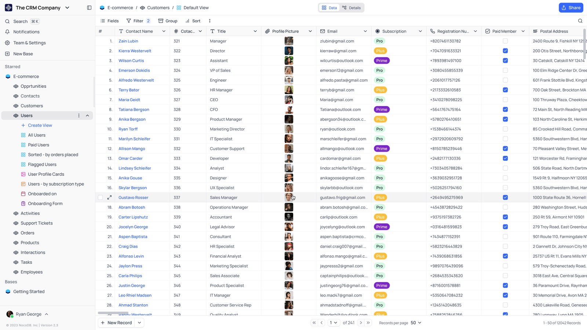
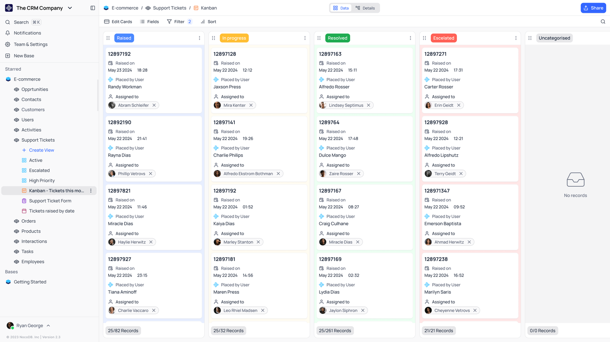
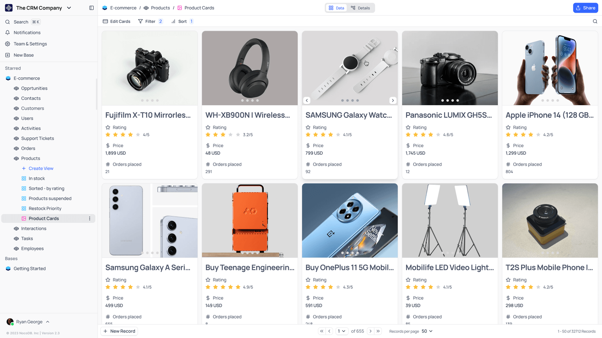
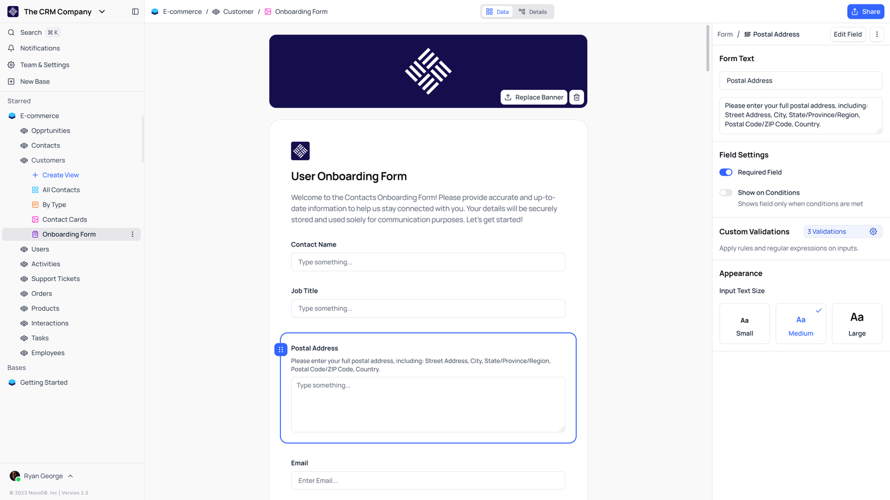
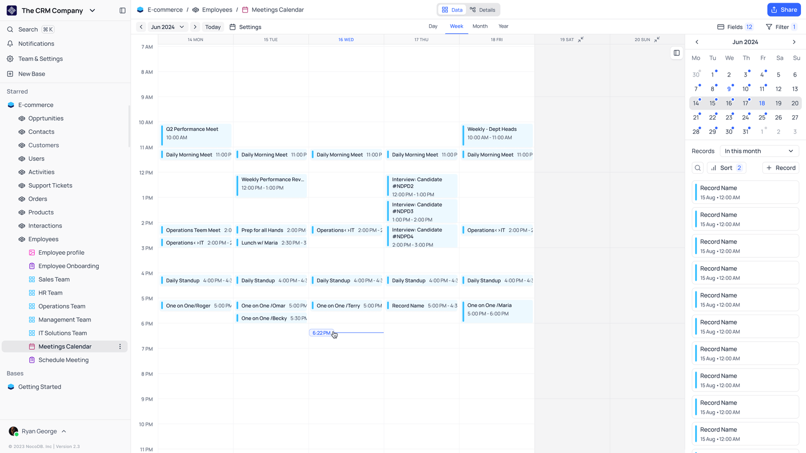

Nocodb
 项目首页
项目首页
NocoDB 是一种开源的数据管理工具，可以将 MySQL、PostgreSQL、SQL Server、SQLite 和 MariaDB 等传统 SQL 数据库转化为智能的电子表格界面。






 如何部署在线 Nocodb
如何部署在线 Nocodb
什么是 Nocodb
- 现代数据管理正从传统数据库走向智能化、协作化，而 NocoDB 作为一种开源工具，让开发者和非技术用户都能够轻松地将传统数据库转换成类似电子表格的界面。NocoDB 被誉为“Airtable 的开源替代品”，因其支持 MySQL、PostgreSQL、SQL Server、SQLite 和 MariaDB 等多种数据库，而备受开发者和企业用户关注。本文将深入探讨 NocoDB 的核心功能、应用场景、安装方法以及它在团队协作与管理数据方面的独特优势。
功能列表
- 电子表格视图：NocoDB 可以将数据库数据展现在一个电子表格视图中，这一设计既方便查看，又让用户操作数据如同操作 Excel 表格一样简单。它允许用户轻松筛选、排序和编辑数据。
- 丰富的数据类型支持：NocoDB 支持各种数据类型，如文本、数字、布尔值、日期、文件和链接，使用户可以灵活地管理多种类型的数据。
- 强大的 API 生成：每一个表格、视图都自动生成了 RESTful API，允许开发者从外部应用中访问和操作数据。这使得 NocoDB 能轻松与其他系统集成，例如构建后台管理系统或创建自动化工作流。
- 数据权限管理：NocoDB 支持对不同的用户和团队设置数据访问权限，确保敏感信息得到保护的同时，也让团队协作更加安全高效。
- 自定义视图和过滤：NocoDB 提供了灵活的视图和过滤功能，允许用户自定义展示方式。例如，可以创建不同的视图以满足不同角色的需求，从而让数据更加清晰直观。